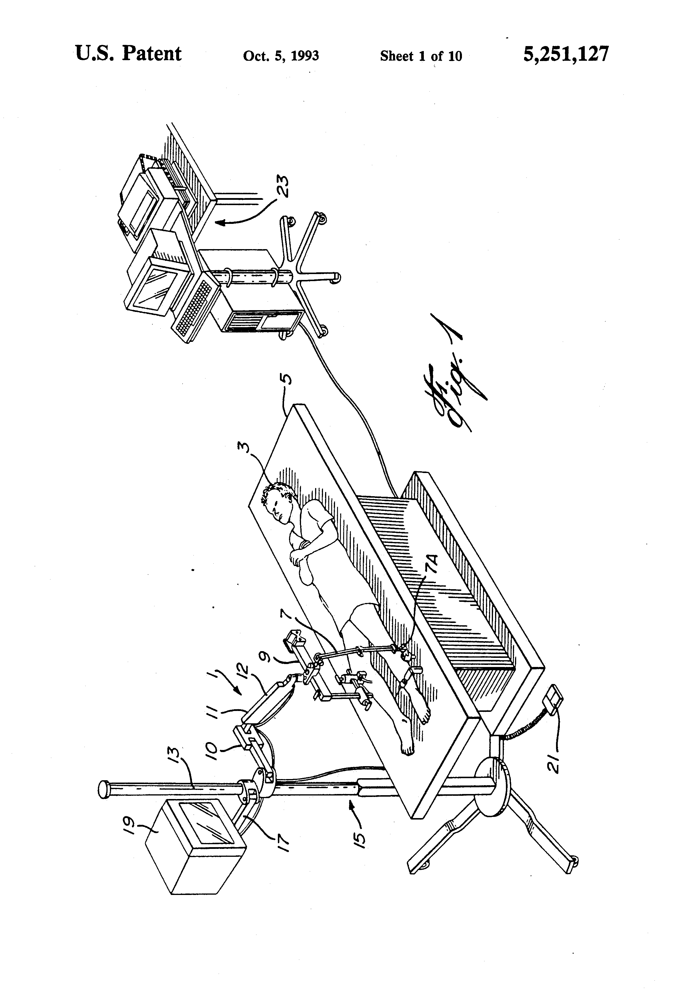
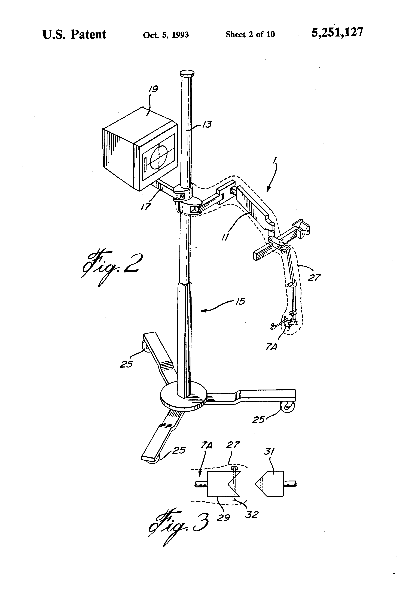
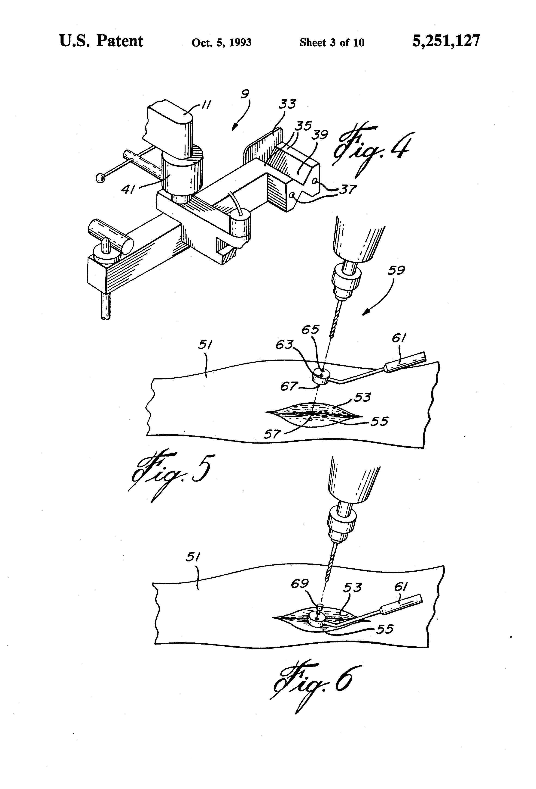

ISG Viewing Wand
A passive, counterweighted six-axis robot arm as the pointing device for a patient's own scanned head

Overview
The ISG Viewing Wand, sold from roughly 1988–1990 by ISG Technologies of Toronto and in clinical neurosurgical use by 1990–1992, was an intra-operative image-guidance system built around a passive articulated mechanical arm. The surgeon's instrument for talking to the computer was that arm itself: a six-degree-of-freedom, counterbalanced linkage — described in the literature as a "proprioceptive robotic-like jointed arm" and as "a multijointed mechanical arm with a range of a 25 inch radius sphere" — whose joints carried analog/digital hybrid transducers reporting the spatial position of the probe tip. Before surgery the patient's CT or MRI scans were transferred by magnetic tape from an ISG Allegro workstation to the operating-room unit, which ran on a standard HP Unix workstation. In the theatre the surgeon touched the probe tip to fiducial markers on the patient's scalp, teaching the machine how image coordinates mapped onto the real head. After that the surgeon simply moved the arm: every sweep of the hand walked a cursor through reformatted axial, coronal and sagittal slices, or through a 3D surface model, so that wherever the physical tip sat in space, a corresponding crosshair sat in the images. In a 17-patient series the system localised lesions to about 1.8 mm (SEM ± 0.36 mm); a 325-case review reported useful registration in 310 of 325 cases (95.4 percent). The interaction is the museum's subject. There is no camera and no force feedback: the arm is inert, and the only channel back to the surgeon is the picture on the screen — a pointing device whose "screen" is a human head seen through a 3D scan.
Deep dive
Where the museum's other 1980s inputs are things you hold — a puck, a glove, a light pen, a bat — the Viewing Wand is held by the machine and merely guided by the hand. Six joints, each with its own transducer, resolve into a tip position by forward kinematics. Nothing is actuated; the arm does not push back. The resulting feel is of moving a heavy drafting machine through space, with the computer reading out where you went. Simon Raab's 1990 patent (US5251127, filed 31 July 1990, issued 5 October 1993) describes exactly this: patient data developed from a 3D imaging source, instrument position sensed by the articulated linkage, and both converted to signals presented on one video display, so that "by watching the display" the practitioner can position an instrument.
The apparatus sat on a rolling stand pushed up beside the operating table, and — because it had to enter a sterile field — the electrogoniometer and its swinging balanced arm were enclosed in a tubular sterile barrier, a bag over the machine. Instruments clipped to the free end were separately autoclave-sterilisable, connecting through a V-block inside the barrier. This is a detail no picture of a workstation screen would ever convey: the surgeon reached into a clear plastic sleeve to move a precision measuring linkage, then clipped a sterilised probe onto its tip.
The machine knows nothing until it has been taught the patient. The operator touches the probe to fiducial markers placed on the head — or, less accurately, to anatomical landmarks — so that image space and physical space can be lined up. Registration accuracy was the whole game: the 325-case series found fiducial-based registration more accurate than anatomical landmarks, and the system's value depended on the machine being introduced into a procedure "with minimal additional effort or time … as long as a trained technician performed the data transfer and reconstruction." The human ritual of pointing at markers is, functionally, the API call that boots the device.
The feedback channel is purely visual: the surgeon watches triplanar 2D slices, with optional 2D/3D views, and adjusts the physical probe accordingly. The system "helps in surgical planning and interactive surgery," was used to place minimal craniotomies, localise the tumour–brain interface and excise lesions, and was extended from neurosurgery to otolaryngology for skull-base, cerebello-pontine-angle and temporal-bone work — reportedly over 400 neurosurgical patients at Bristol plus 14 ENT cases. It is a rare museum artefact whose user interface is a single screen in a room that otherwise runs on touch, feel and instruments.
Three things are commonly conflated and should not be merged: the ISG Viewing Wand (ISG Technologies / later Elekta) is not the Douglas or Carl Zeiss "Viewing Wand" lineage; the ISG Allegro is the separate planning workstation that fed the Viewing Wand images by tape, not the operating-room arm itself; and Raab's patent is assigned to FARO Medical Technologies, the medical arm of the Faro Technologies lineage, so the patent assignee and the product vendor are different names for adjacent things. The "electrogoniometer" wording of the patent is the technically accurate description of what the surgeon is actually holding.
Team & pioneers
- ISG Technologies Inc. Toronto / Mississauga, Ontario — developed and sold the Viewing Wand OR navigation system.
- Simon Raab. Inventor of US5251127, "Computer-aided surgery apparatus"; assigned to FARO Medical Technologies Inc.
- Drake, Rutka & Hoffman. Toronto group that published the ISG Viewing Wand system report (Neurosurgery, 1994).
- D.G.T. Thomas group (Bristol). Principal clinical users; over 400 neurosurgical cases with the wand.
Media


Sources
- US5251127A, Simon Raab / FARO Medical Technologies, "Computer-aided surgery apparatus" (filed 1990-07-31, issued 1993-10-05) — Google Patents
- Frameless stereotaxy and interactive neurosurgery with the ISG viewing wand (PMID 8748583)
- Clinical use of a frameless stereotactic arm: results of 325 cases (PMID 7616261)
- Drake, Rutka & Hoffman, "ISG Viewing Wand System", Neurosurgery 1994
- Intra-operative image guidance in otolaryngology — the use of the ISG viewing wand (Flinders research record)
- McGill MNI thesis, "The Viewing Wand" — OR unit imports Allegro data by magnetic tape, runs on an HP Unix workstation